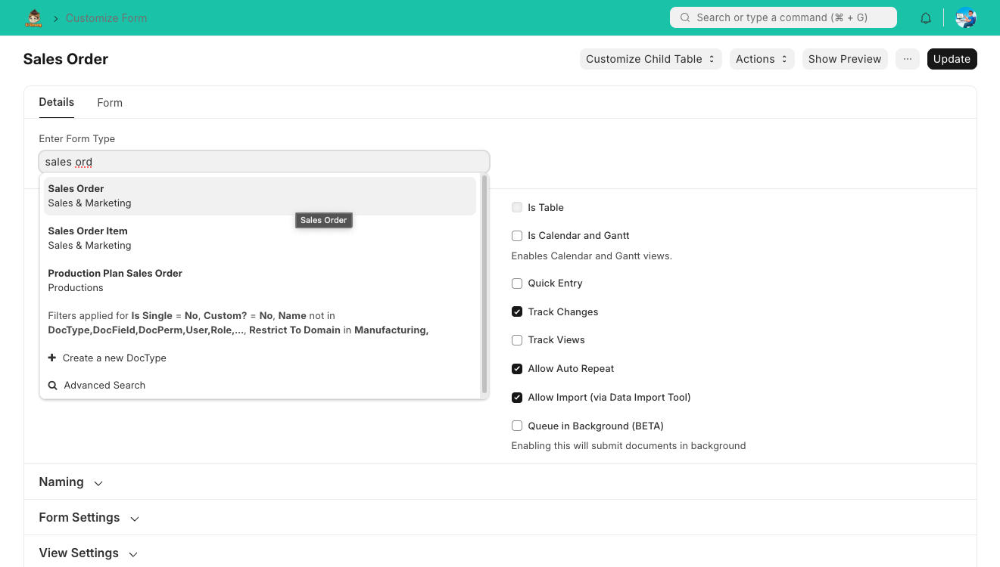
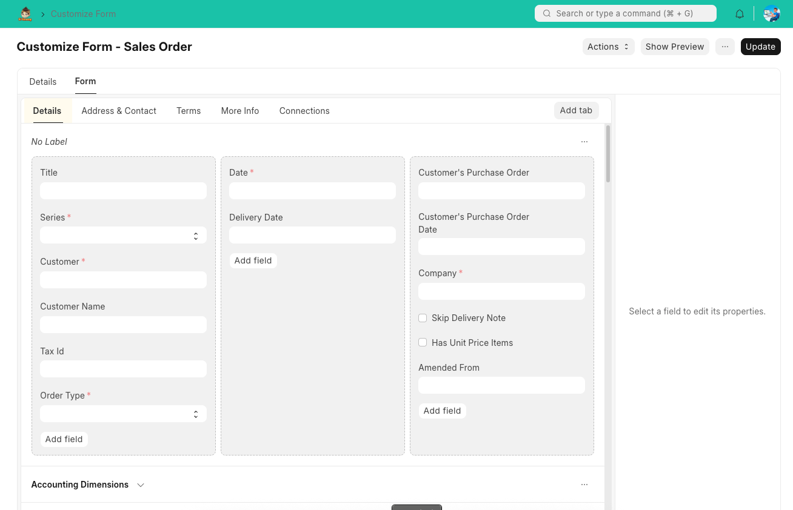
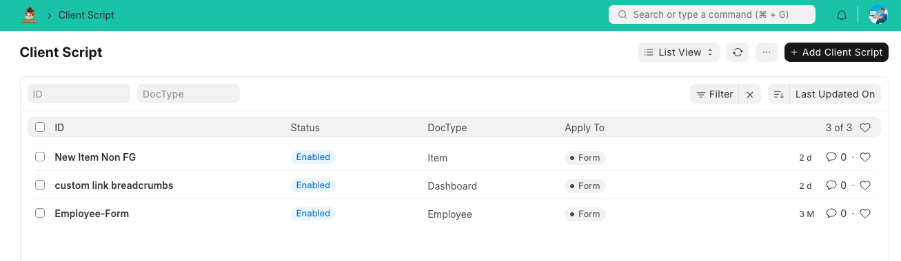
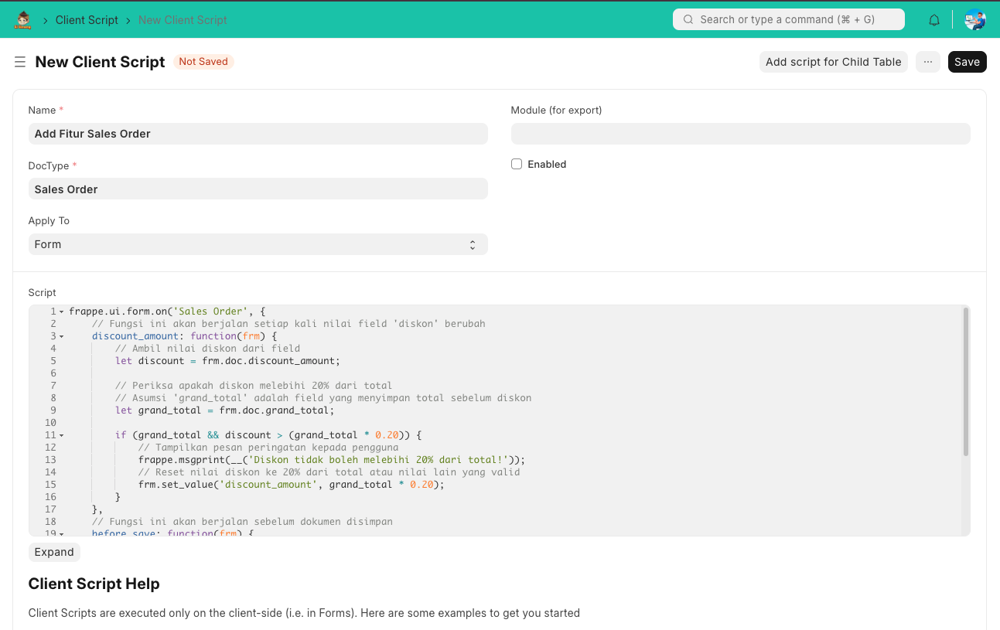
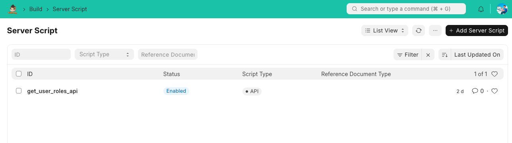
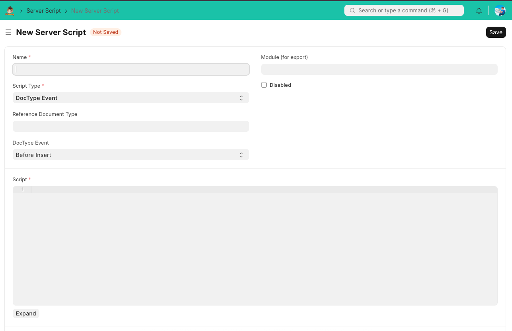
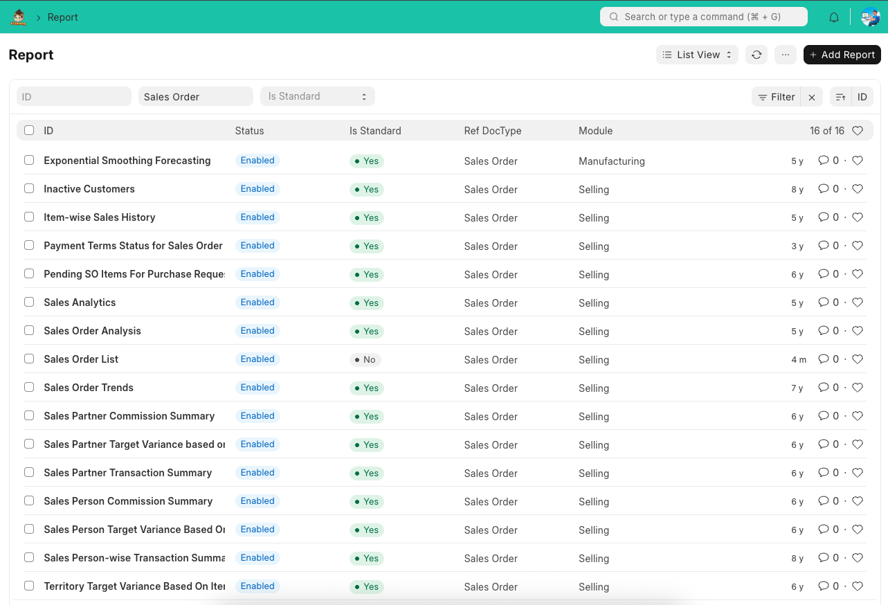
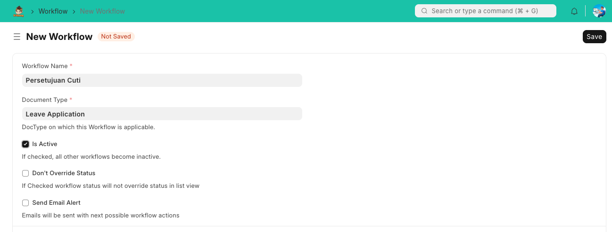
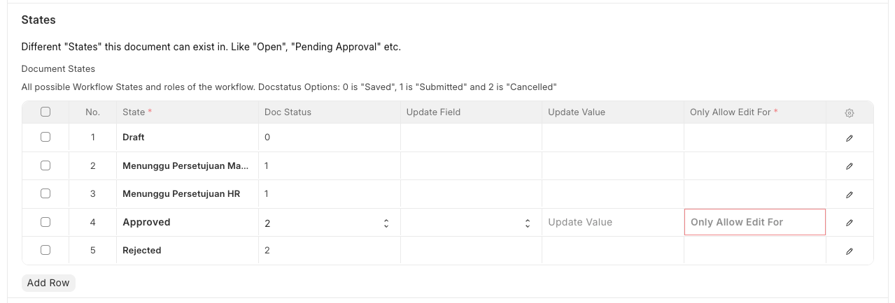
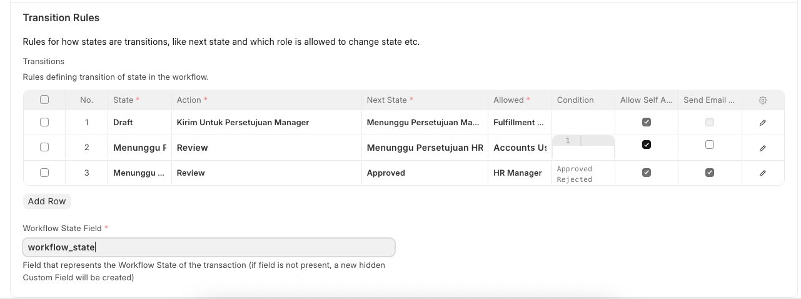

Pengantar ERP Siumang: Membangun Masa Depan Bisnis Anda
Selamat datang di dokumentasi ERP Siumang, sebuah platform yang dirancang untuk merevolusi cara Anda mengelola bisnis di era digital. Di tengah lanskap bisnis yang terus berubah, ERP Siumang hadir sebagai solusi terintegrasi yang tidak hanya mengotomatisasi proses, tetapi juga menghubungkan setiap aspek operasional Anda, memberdayakan tim, dan mendorong pertumbuhan berkelanjutan. Kami percaya bahwa teknologi terbaik adalah yang berpusat pada manusia, dan ERP Siumang adalah wujud dari filosofi tersebut.
 Gambar: Tampilan umum antarmuka ERP Siumang.
Gambar: Tampilan umum antarmuka ERP Siumang.
1. Pengantar ERP Siumang untuk Administrator
Bagian ini menyediakan dasar pemahaman ERP Siumang dari perspektif administrator. Anda akan diperkenalkan pada arsitektur inti sistem dan bagaimana peran Anda sebagai administrator sangat krusial dalam menjaga efisiensi dan keamanan operasional.
1.1. Arsitektur Dasar ERP Siumang dan Frappe Framework
ERP Siumang dibangun di atas Frappe Framework, sebuah fondasi yang kuat dan fleksibel. Memahami arsitektur dasar ini akan membantu Anda mengelola dan menyesuaikan sistem dengan lebih efektif. Komponen inti yang akan kita bahas meliputi:
- DocType: Ini adalah "cetak biru" dari setiap jenis data atau dokumen dalam sistem (misalnya, Invoice, Pelanggan, Produk). DocType mendefinisikan struktur data, perilaku, dan aturan validasi.
- Forms: Antarmuka pengguna untuk melihat, membuat, dan mengedit DocType. Anda akan belajar bagaimana formulir ini dapat dikustomisasi untuk memenuhi kebutuhan spesifik bisnis.
- Reports: Mekanisme untuk mengekstrak dan menyajikan data dari sistem dalam format yang dapat dianalisis. Frappe menyediakan berbagai jenis laporan, dari yang sederhana hingga yang sangat kompleks.
- Workflows: Mengotomatisasi alur persetujuan dan transisi status dokumen, memastikan proses bisnis berjalan sesuai aturan yang ditetapkan.
Kami juga akan menjelaskan struktur aplikasi (folder apps dan sites) yang menjadi fondasi ERP Siumang.
 Gambar: Diagram Arsitektur Dasar ERP Siumang dan Frappe Framework.
Gambar: Diagram Arsitektur Dasar ERP Siumang dan Frappe Framework.
1.2. Navigasi Antarmuka Admin
Antarmuka administrator ERP Siumang dirancang untuk efisiensi. Memahami cara menavigasinya akan mempercepat pekerjaan Anda dalam mengelola sistem:
- Awesome Bar: Ini adalah bilah pencarian universal di bagian atas, yang memungkinkan akses cepat ke pengaturan, laporan, DocType, dan fungsi lainnya hanya dengan mengetikkan nama. Ini adalah alat yang sangat ampuh untuk administrator.
- Menu Explore dan Settings di Sidebar: Sidebar di sisi kiri menyediakan menu terorganisir untuk menjelajahi berbagai modul dan mengakses pengaturan sistem. Menu 'Settings' adalah pintu gerbang utama untuk semua konfigurasi administratif.
- Pengelolaan Dashboard Administrator: Pelajari cara mengkustomisasi dan mengelola dasbor Anda untuk mendapatkan gambaran umum kinerja sistem dan metrik penting secara sekilas.
 Gambar: Tampilan Navigasi Antarmuka Administrator.
Gambar: Tampilan Navigasi Antarmuka Administrator.
1.3. Konsep Peran (Role) dan Pengguna (User)
Manajemen peran dan pengguna adalah aspek fundamental keamanan dan fungsionalitas ERP Siumang. Bagian ini akan menjelaskan:
- Perbedaan antara Peran dan Pengguna: Pahami bagaimana peran (misalnya, 'Administrator', 'Sales User', 'Accountant') mendefinisikan sekumpulan izin, sementara pengguna adalah individu yang diberi peran tersebut.
- Pembuatan dan Pengelolaan Pengguna Baru: Langkah-langkah untuk menambahkan pengguna baru ke sistem, termasuk detail kontak dan kredensial login.
- Penetapan dan Penyesuaian Peran untuk Setiap Pengguna: Cara menetapkan satu atau lebih peran kepada pengguna dan menyesuaikan izin spesifik jika diperlukan, memastikan prinsip hak akses minimal diterapkan.
 Gambar: Ilustrasi Konsep Peran dan Pengguna.
Gambar: Ilustrasi Konsep Peran dan Pengguna.
2. Konfigurasi Sistem Utama
Bagian ini membahas pengaturan awal dan konfigurasi esensial untuk fungsionalitas sistem ERP Siumang. Konfigurasi yang tepat di sini akan menjadi dasar bagi operasional yang lancar dan efisien di seluruh modul.
2.1. Pengaturan Perusahaan (Company Setup)
Langkah pertama dalam menyiapkan ERP Siumang adalah mengonfigurasi informasi dasar perusahaan Anda. Ini termasuk:
- Informasi dasar perusahaan: Nama, alamat, dan detail kontak.
- Mata uang: Menetapkan mata uang dasar untuk transaksi keuangan.
- Zona waktu: Memastikan semua pencatatan waktu sesuai dengan lokasi operasional Anda.
- Pengaturan akun awal (Chart of Accounts): Struktur akun keuangan yang akan digunakan untuk pencatatan akuntansi.
 Gambar: Tampilan Pengaturan Perusahaan.
Gambar: Tampilan Pengaturan Perusahaan.
2.2. Pengaturan Email dan Notifikasi
Komunikasi adalah kunci dalam setiap sistem ERP. Bagian ini akan memandu Anda dalam mengonfigurasi email dan notifikasi:
- Konfigurasi Email Account dan Email Domain: Menyiapkan akun email yang akan digunakan sistem untuk mengirim dan menerima email.
- Manajemen Email Template dan Email Alert: Membuat template email kustom untuk berbagai notifikasi dan mengatur peringatan email otomatis berdasarkan peristiwa tertentu dalam sistem.
 Gambar: Tampilan Pengaturan Email dan Notifikasi.
Gambar: Tampilan Pengaturan Email dan Notifikasi.
2.3. Pengaturan Cetakan (Print Settings)
Mengelola format cetakan dokumen adalah penting untuk branding dan kepatuhan. Anda akan belajar tentang:
- Manajemen Print Format kustom: Mendesain tata letak cetakan untuk dokumen seperti faktur, pesanan pembelian, dll.
- Pengaturan printer dan antrean cetak: Mengonfigurasi printer yang terhubung dan mengelola antrean dokumen yang akan dicetak.
 Gambar: Tampilan Pengaturan Cetakan.
Gambar: Tampilan Pengaturan Cetakan.
2.4. Pengaturan Dokumen (Document Settings)
Pengaturan dokumen memengaruhi bagaimana dokumen dibuat dan dikelola dalam sistem:
- Penomoran otomatis (Naming Series): Mengatur pola penomoran unik untuk setiap jenis dokumen (misalnya, INV-YYYY-MM-0001 untuk faktur).
- Validasi dan alur kerja global: Menetapkan aturan validasi umum untuk dokumen dan mengonfigurasi alur kerja yang berlaku di seluruh sistem.
 Gambar: Tampilan Pengaturan Dokumen.
Gambar: Tampilan Pengaturan Dokumen.
2.5. Pengaturan Keamanan
Keamanan adalah prioritas utama. Bagian ini mencakup konfigurasi untuk melindungi sistem Anda:
- Kebijakan kata sandi: Menetapkan aturan kompleksitas dan masa berlaku kata sandi.
- Autentikasi Dua Faktor (Two-Factor Authentication): Mengaktifkan lapisan keamanan tambahan untuk login pengguna.
- Manajemen Login Attempts: Mengonfigurasi batasan upaya login yang gagal untuk mencegah serangan brute-force.
 Gambar: Tampilan Pengaturan Keamanan.
Gambar: Tampilan Pengaturan Keamanan.
3. Manajemen Izin dan Hak Akses (Permission Management)
Bagian krusial ini menjelaskan secara rinci cara mengontrol akses data dan fungsi di ERP Siumang. Manajemen izin yang tepat sangat penting untuk menjaga integritas data dan memastikan setiap pengguna hanya memiliki akses ke informasi yang relevan dengan perannya.
3.1. Konsep Perm Level (Level Izin)
Perm Level adalah salah satu fitur paling fundamental dan powerful dalam sistem izin granular ERP Siumang. Ini adalah fondasi yang memungkinkan administrator untuk mengontrol akses tidak hanya pada level dokumen secara keseluruhan, tetapi juga pada bagian-bagian spesifik atau bahkan field individual di dalam sebuah dokumen. Memahami konsep ini secara mendalam sangat krusial untuk mengonfigurasi keamanan data dan alur kerja yang presisi dalam sistem Anda.
Mengapa Perm Level Penting untuk Kontrol Granular?
Dalam lingkungan bisnis yang kompleks, tidak semua informasi dalam satu dokumen harus dapat diakses atau diubah oleh semua orang. Misalnya, seorang staf penjualan mungkin perlu melihat detail pesanan penjualan, tetapi tidak seharusnya bisa mengubah harga diskon yang telah disetujui manajer. Di sinilah Perm Level berperan penting:
- Keamanan Data yang Tepat Sasaran: Dengan Perm Level, Anda dapat melindungi data sensitif seperti informasi gaji karyawan, harga jual rahasia, atau detail persetujuan finansial, bahkan ketika dokumen induknya (misalnya, formulir karyawan atau pesanan penjualan) dapat diakses secara umum.
- Pemisahan Tugas (Segregation of Duties): Ini memungkinkan Anda untuk menegakkan prinsip pemisahan tugas, di mana tidak ada satu individu pun yang memiliki kontrol penuh atas seluruh proses. Contohnya, satu orang bisa membuat faktur, tetapi orang lain dengan Perm Level yang lebih tinggi yang dapat menyetujuinya.
- Penyederhanaan Antarmuka Pengguna: Dengan menyembunyikan atau membuat field tertentu menjadi read-only berdasarkan Perm Level pengguna, Anda dapat menyederhanakan antarmuka pengguna, mengurangi kebingungan, dan meminimalkan kesalahan input.
- Mendukung Alur Kerja Kompleks: Perm Level terintegrasi erat dengan alur kerja (Workflow), memungkinkan transisi status dokumen hanya jika pengguna memiliki Perm Level yang sesuai untuk melakukan tindakan tersebut (misalnya, hanya manajer dengan Perm Level tertentu yang dapat "Submit" atau "Approve" sebuah dokumen).
 Gambar: Ilustrasi Konsep Perm Level dalam dokumen.
Gambar: Ilustrasi Konsep Perm Level dalam dokumen.
Perbedaan antara Perm Level 0 dan Level Lainnya
Setiap field dalam DocType memiliki properti 'Perm Level' yang dapat diatur. Secara default, sebagian besar field berada pada Perm Level 0. Berikut adalah penjelasannya:
- Perm Level 0 (Akses Dasar Dokumen):
Ini adalah level izin paling dasar dan berlaku untuk seluruh dokumen. Ketika Anda memberikan izin 'Baca' atau 'Tulis' pada Perm Level 0 untuk sebuah peran, pengguna dengan peran tersebut akan dapat membaca atau menulis seluruh dokumen, kecuali ada aturan Perm Level yang lebih tinggi yang membatasi field tertentu.
Contoh: Jika 'Sales User' memiliki izin 'Baca' pada Perm Level 0 untuk DocType 'Sales Order', mereka dapat melihat semua field dalam Sales Order tersebut, kecuali ada field yang diatur pada Perm Level yang lebih tinggi.
- Perm Level 1, 2, 3... (Akses untuk Field/Bagian Spesifik):
Level izin yang lebih tinggi (1 hingga 9) digunakan untuk mengamankan field atau bagian tertentu dalam sebuah dokumen. Jika sebuah field diatur pada Perm Level X (misalnya, Perm Level 1), maka pengguna harus memiliki izin yang sesuai untuk Perm Level X tersebut agar dapat mengakses field tersebut.
Contoh Kasus Penggunaan:
- Field Gaji Karyawan: Field 'Gaji Pokok' dalam DocType 'Employee' dapat diatur ke Perm Level 1. Kemudian, hanya peran 'HR Manager' yang diberikan izin 'Baca' dan 'Tulis' pada Perm Level 1, sementara peran 'Employee' hanya diberikan izin 'Baca' pada Perm Level 0. Ini berarti karyawan dapat melihat profil mereka, tetapi tidak dapat melihat atau mengubah gaji mereka sendiri, dan hanya HR Manager yang dapat melakukannya.
- Field Harga Diskon: Dalam 'Sales Order', field 'Diskon' bisa diatur ke Perm Level 2. Hanya 'Sales Manager' yang memiliki izin 'Tulis' pada Perm Level 2, sementara 'Sales User' hanya memiliki izin 'Baca' pada Perm Level 2 (atau tidak sama sekali). Ini memastikan hanya manajer yang dapat mengubah diskon besar.
- Status Persetujuan: Field 'Status' dalam alur kerja (misalnya, 'Disetujui Oleh') dapat diatur ke Perm Level 3, sehingga hanya direktur atau manajer senior yang memiliki izin pada Perm Level 3 yang dapat mengubah status tersebut.
Dengan demikian, Perm Level memungkinkan Anda untuk membuat lapisan keamanan yang berlapis, memberikan kontrol yang sangat detail atas data sensitif dan proses bisnis Anda.
3.2. Mengelola Izin via Permission Manager
Permission Manager adalah alat utama Anda untuk menetapkan, memodifikasi, dan mengelola hak akses berbasis peran (role-based permissions) di ERP Siumang. Alat ini menyediakan antarmuka yang intuitif untuk mendefinisikan izin spesifik pada setiap DocType untuk setiap peran yang ada. Memahami cara kerjanya adalah kunci untuk mengimplementasikan model keamanan yang kuat dan efisien.
Langkah-langkah Menggunakan Permission Manager
Anda dapat mengakses Permission Manager dari Awesome Bar dengan mengetik "Permission Manager". Setelah terbuka, prosesnya sangatlah terstruktur:
- Pilih DocType: Pada bilah dropdown pertama, Anda harus memilih DocType (jenis dokumen) yang ingin Anda atur izinnya. Misalnya, pilih "Sales Order" atau "Employee".
- Pilih Peran (Role): Pada bilah dropdown kedua, Anda akan memilih peran (misalnya, "Sales User", "HR Manager", "Akuntan") yang akan Anda konfigurasi izinnya.
Setelah memilih kedua elemen ini, tabel izin akan muncul, menampilkan daftar Perm Level (Level Izin) dan jenis hak akses yang bisa Anda atur.
Jenis-jenis Hak Akses yang Dapat Diberikan
Di Permission Manager, Anda akan menemukan serangkaian kotak centang yang mewakili berbagai hak akses. Anda dapat mencentang atau menghilangkan centang pada kotak ini untuk setiap Perm Level dan peran. Berikut adalah penjelasan dari setiap hak akses:
- Baca (Read): Mengizinkan pengguna untuk melihat dokumen. Tanpa izin ini, pengguna tidak akan bisa membuka dokumen sama sekali.
- Tulis (Write): Mengizinkan pengguna untuk membuat perubahan pada dokumen yang sudah ada.
- Buat (Create): Mengizinkan pengguna untuk membuat dokumen baru dari awal.
- Hapus (Delete): Mengizinkan pengguna untuk menghapus dokumen. Hak akses ini harus diberikan dengan hati-hati.
- Kirim (Submit): Mengizinkan pengguna untuk "mengirimkan" dokumen. Dalam alur kerja, ini biasanya mengunci dokumen dari perubahan lebih lanjut.
- Batalkan (Cancel): Mengizinkan pengguna untuk membatalkan dokumen yang telah dikirim. Ini juga merupakan izin yang sangat sensitif.
- Amandemen (Amend): Mengizinkan pengguna untuk membuat amandemen atau revisi dari dokumen yang sudah dikirim.
- Laporan (Report): Mengizinkan pengguna untuk melihat laporan terkait DocType tersebut.
- Cetak (Print): Mengizinkan pengguna untuk mencetak dokumen.
- Email: Mengizinkan pengguna untuk mengirimkan dokumen melalui email langsung dari sistem.
- Impor (Import): Mengizinkan pengguna untuk mengimpor data ke dalam sistem untuk DocType tersebut.
- Ekspor (Export): Mengizinkan pengguna untuk mengekspor data dari sistem untuk DocType tersebut.
Pengaruh Perm Level pada Hak Akses
Seperti yang telah dijelaskan di poin 3.1, Perm Level bekerja sebagai lapisan tambahan untuk kontrol granular. Di Permission Manager, Anda dapat melihat tabel izin yang dibagi berdasarkan Perm Level. Setiap baris tabel mewakili satu Perm Level (0, 1, 2, dst.).
Ketika Anda mencentang izin 'Tulis' pada baris 'Perm Level 0' untuk peran 'Sales User', itu berarti peran tersebut dapat mengubah semua field dalam dokumen 'Sales Order' yang berada di Perm Level 0. Namun, jika ada field seperti 'Diskon' yang diatur ke 'Perm Level 1', peran 'Sales User' tidak akan dapat mengubah field tersebut, kecuali Anda juga memberikan izin 'Tulis' pada baris 'Perm Level 1' di Permission Manager.
Dengan cara ini, Permission Manager memungkinkan Anda untuk menerapkan kebijakan hak akses yang sangat rinci, memastikan setiap pengguna memiliki akses yang tepat sesuai dengan tanggung jawab mereka tanpa membahayakan integritas dan keamanan data secara keseluruhan.
 Gambar: Tampilan antarmuka Permission Manager untuk mengelola izin.
Gambar: Tampilan antarmuka Permission Manager untuk mengelola izin.
3.3. Menyesuaikan Perm Level Field melalui Customize Form
Selain mengatur izin secara umum melalui Permission Manager, ERP Siumang juga memungkinkan Anda untuk melakukan kontrol yang lebih halus pada level field (kolom data) spesifik dalam sebuah formulir. Ini dilakukan melalui fitur Customize Form. Dengan fitur ini, Anda dapat menetapkan Perm Level yang berbeda untuk setiap field, memungkinkan Anda untuk menyembunyikan, membuat hanya-baca (read-only), atau mengizinkan pengeditan field tertentu hanya untuk peran dengan izin yang lebih tinggi.
Mengapa Menyesuaikan Perm Level Field itu Penting?
- Kontrol Data Sensitif: Melindungi informasi krusial seperti gaji, harga diskon khusus, atau data rahasia lainnya agar hanya dapat diakses atau diubah oleh personel yang berwenang.
- Penyederhanaan UI/UX: Dengan menyembunyikan field yang tidak relevan untuk peran tertentu, antarmuka pengguna menjadi lebih bersih dan mudah digunakan, mengurangi kebingungan bagi pengguna akhir.
- Mencegah Kesalahan Input: Membuat field menjadi read-only untuk peran tertentu dapat mencegah perubahan yang tidak disengaja atau tidak sah pada data penting.
- Mendukung Alur Kerja Kompleks: Dalam alur kerja yang melibatkan beberapa tahapan persetujuan, Anda dapat memastikan bahwa field tertentu hanya dapat diisi atau diubah pada tahapan yang relevan oleh peran yang tepat.
Langkah-langkah Menyesuaikan Perm Level Field (Contoh: Field Gaji Karyawan)
Mari kita ambil contoh kasus di mana Anda ingin memastikan bahwa field "Gaji Pokok" pada DocType "Employee" hanya dapat dilihat oleh peran "HR Manager" dan tidak oleh karyawan biasa.
- Akses Customize Form:
- Buka Awesome Bar (bilah pencarian di atas).
- Ketik "Customize Form" dan pilih opsi yang muncul.
- Pilih DocType:
- Pada dropdown "Enter Form Type", pilih DocType yang ingin Anda kustomisasi. Dalam contoh ini, ketik dan pilih "Employee".
- Formulir kustomisasi untuk DocType Employee akan terbuka, menampilkan daftar semua field yang ada.
- Temukan dan Edit Field Target:
- Cari field "Gaji Pokok" (atau nama field yang relevan untuk gaji di instalasi Anda, mungkin "Basic Salary" atau sejenisnya) dalam daftar.
- Klik pada baris field "Gaji Pokok" untuk membukanya dan melihat propertinya.
- Atur Properti Perm Level:
- Di properti field "Gaji Pokok", Anda akan melihat opsi "Perm Level".
- Ubah nilai "Perm Level" dari 0 (default) menjadi 1 (atau angka lain yang lebih tinggi, misalnya 2, 3, dst. sesuai kebutuhan Anda).
- Anda juga dapat mencentang opsi seperti "Read Only" atau "Hidden" jika Anda ingin field tersebut selalu hanya-baca atau tersembunyi untuk peran tertentu yang tidak memiliki izin pada Perm Level ini.
- Simpan Perubahan:
- Setelah mengatur "Perm Level" field, klik tombol "Update" atau "Simpan" di bagian atas formulir Customize Form.
- Sistem akan menyimpan perubahan pada struktur DocType.
- Konfigurasi Izin di Permission Manager:
- Sekarang, kembali ke Permission Manager (ketik "Permission Manager" di Awesome Bar).
- Pilih DocType "Employee" dan Peran "HR Manager".
- Pastikan peran "HR Manager" memiliki izin "Baca" dan "Tulis" (atau izin lain yang diperlukan) pada Perm Level 1.
- Untuk peran "Employee" (karyawan biasa), pastikan mereka TIDAK memiliki izin "Baca" atau "Tulis" pada Perm Level 1. Mereka hanya perlu izin pada Perm Level 0 untuk melihat profil mereka sendiri (kecuali field gaji).
Dengan langkah-langkah ini, field "Gaji Pokok" kini akan diatur pada Perm Level 1. Ini berarti hanya peran yang secara eksplisit diberikan izin pada Perm Level 1 (seperti "HR Manager") yang dapat melihat atau mengubahnya. Peran lain yang hanya memiliki akses pada Perm Level 0 tidak akan dapat melihat atau berinteraksi dengan field tersebut.
3.4. Aturan Berbagi Dokumen (Share)
Selain sistem izin berbasis peran yang komprehensif, ERP Siumang juga menawarkan fleksibilitas untuk berbagi dokumen secara individual. Fitur ini sangat berguna ketika Anda perlu memberikan akses sementara atau spesifik kepada pengguna atau peran tertentu yang tidak memiliki izin standar untuk melihat atau mengedit dokumen tersebut melalui Permission Manager. Ini adalah solusi ideal untuk kolaborasi ad-hoc atau ketika informasi perlu dibagikan di luar struktur peran yang telah ditetapkan.
Berbagi Dokumen Secara Individu: Langkah-langkah Praktis
Memberikan akses ke sebuah dokumen kepada individu atau peran tertentu adalah proses yang lugas dan dapat dilakukan langsung dari dokumen yang ingin Anda bagikan. Berikut adalah langkah-langkahnya:
- Buka Dokumen yang Ingin Dibagikan: Navigasikan ke dokumen spesifik yang ingin Anda bagikan (misalnya, sebuah Pesanan Penjualan, Faktur, atau Proyek).
- Akses Opsi Berbagi (Share): Di bagian atas atau di menu "Menu" pada dokumen yang terbuka, Anda akan menemukan tombol atau ikon "Share" (biasanya terletak di bagian atas atau di menu "Menu" pada dokumen), lalu klik ikon ini untuk membuka dialog berbagi.
- Pilih Pengguna atau Peran Penerima: Dalam dialog berbagi yang muncul, Anda akan melihat kolom input di mana Anda dapat mencari dan memilih pengguna atau peran yang ingin Anda berikan akses.
- Anda bisa mengetik nama pengguna (misalnya, "John Doe") atau nama peran (misalnya, "Auditor Eksternal").
- ERP Siumang akan menampilkan saran saat Anda mengetik. Pilih entitas yang relevan dari daftar. Anda bisa menambahkan satu atau beberapa pengguna/peran sekaligus.
- Tentukan Izin Berbagi: Setelah memilih penerima, Anda akan melihat serangkaian kotak centang di samping nama mereka. Ini adalah izin spesifik yang dapat Anda berikan hanya untuk dokumen ini:
- Baca (Read): Penerima dapat melihat semua detail dokumen, tetapi tidak dapat membuat perubahan apa pun. Ini adalah izin yang paling umum untuk berbagi informasi atau untuk tujuan audit.
- Tulis (Write): Penerima dapat melihat dan mengedit dokumen. Hak ini harus diberikan dengan hati-hati, terutama untuk dokumen yang sensitif atau setelah dokumen "disubmit".
- Hapus (Delete): Penerima dapat menghapus dokumen. Izin ini sangat kuat dan jarang diberikan melalui fitur berbagi individual.
- Kirim (Submit): Jika dokumen memiliki alur kerja pengiriman (misalnya, Pesanan Penjualan yang perlu disubmit untuk diproses), penerima dapat "mengirimkan" dokumen.
- Cetak (Print), Email, dll.: Bergantung pada jenis dokumen, Anda mungkin juga dapat memberikan izin untuk mencetak dokumen atau mengirimkannya melalui email langsung dari sistem.
- Simpan Pengaturan Berbagi: Setelah Anda mengatur semua izin yang diinginkan untuk setiap penerima, klik tombol "Share" atau "Simpan" di dialog. Dokumen tersebut kini akan dapat diakses oleh pengguna atau peran yang Anda tentukan dengan izin yang telah Anda atur.
Mengelola dan Mencabut Izin Berbagi
Anda dapat dengan mudah mengelola atau mencabut izin berbagi kapan saja. Kembali ke dokumen yang relevan, akses dialog "Share" lagi. Di sana, Anda akan melihat daftar semua pengguna atau peran yang saat ini memiliki akses berbagi ke dokumen tersebut. Anda bisa mengubah izin mereka atau menghapus mereka dari daftar untuk mencabut akses sepenuhnya.
Fitur berbagi dokumen secara individual ini melengkapi sistem izin berbasis peran yang lebih statis, memberikan administrator dan pengguna kemampuan untuk mengelola akses data dengan fleksibilitas yang tinggi, baik untuk kebutuhan kolaborasi jangka pendek maupun untuk skenario akses yang sangat spesifik yang tidak tercakup oleh peran standar.
 Gambar: Tampilan dialog berbagi dokumen di ERP Siumang.
Gambar: Tampilan dialog berbagi dokumen di ERP Siumang.
3.5. Manajemen Batasan Data (Role-based Permissions)
Dalam skenario bisnis yang semakin kompleks, tidak cukup hanya mengontrol siapa yang dapat melihat atau mengedit jenis dokumen tertentu. Seringkali, Anda perlu membatasi data yang dapat diakses oleh pengguna berdasarkan kriteria spesifik, seperti wilayah geografis, departemen, atau cabang perusahaan. Di sinilah fitur Manajemen Batasan Data berbasis Peran (Role-based Permissions) di ERP Siumang menjadi sangat krusial. Fitur ini memungkinkan Anda untuk menerapkan filter data otomatis berdasarkan peran pengguna, memastikan bahwa setiap individu hanya melihat data yang relevan dengan lingkup tanggung jawab mereka.
Mengapa Batasan Data Berbasis Peran Penting?
- Peningkatan Keamanan Data: Mencegah akses tidak sah ke data sensitif yang seharusnya tidak terlihat oleh peran tertentu, bahkan jika mereka memiliki izin dasar untuk DocType tersebut.
- Peningkatan Privasi: Memastikan informasi pribadi atau rahasia perusahaan hanya dapat diakses oleh pihak yang berwenang.
- Relevansi Informasi: Pengguna hanya disajikan dengan data yang relevan dengan pekerjaan mereka, mengurangi kekacauan informasi dan meningkatkan fokus.
- Kepatuhan Regulasi: Membantu perusahaan mematuhi regulasi privasi data dan standar industri yang ketat.
- Efisiensi Operasional: Pengguna dapat bekerja lebih efisien karena mereka tidak perlu menyaring data yang tidak relevan.
Cara Kerja Batasan Data Berbasis Peran (Konseptual)
Konfigurasi batasan data ini umumnya dilakukan melalui pengaturan izin peran yang lebih lanjut di ERP Siumang. Anda akan mendefinisikan kondisi atau filter yang akan diterapkan secara otomatis saat pengguna dengan peran tertentu mencoba mengakses data. Misalnya, Anda dapat mengatur bahwa:
- Jika peran = 'Sales User', maka hanya tampilkan dokumen 'Sales Order' di mana 'Wilayah Penjualan' = 'Wilayah Pengguna'.
- Jika peran = 'HR Manager', maka hanya tampilkan dokumen 'Employee' di mana 'Departemen' = 'Departemen Pengguna'.
Sistem akan secara otomatis menerapkan filter ini di latar belakang, sehingga pengguna tidak perlu lagi memfilter secara manual. Ini berlaku untuk tampilan daftar (list view), laporan, dan bahkan saat mencari dokumen.
Contoh Penerapan Batasan Data
Mari kita lihat beberapa skenario praktis:
- Pembatasan Wilayah untuk Pengguna Penjualan:
- Skenario: Perusahaan Anda memiliki tim penjualan yang dibagi berdasarkan wilayah (misalnya, Jawa Barat, Jawa Tengah, Jawa Timur). Setiap 'Sales User' hanya boleh melihat faktur penjualan dan pesanan penjualan dari wilayah mereka sendiri.
- Penerapan (Langkah-langkah Konseptual):
- Pastikan Data Master Wilayah Ada: Pastikan Anda memiliki daftar wilayah yang terdefinisi dengan baik di ERP Siumang (misalnya, DocType 'Wilayah' atau 'Territory').
- Hubungkan Pengguna ke Wilayah: Pastikan setiap pengguna 'Sales User' memiliki field yang mengaitkan mereka dengan wilayah spesifiknya (misalnya, di profil pengguna, ada field 'Wilayah Default' yang diisi dengan 'Jawa Barat' untuk Pengguna A, 'Jawa Tengah' untuk Pengguna B, dst.).
- Identifikasi Field Kriteria pada Dokumen: Pastikan dokumen yang ingin dibatasi (misalnya, 'Sales Order', 'Sales Invoice') memiliki field yang mencatat wilayah terkait (misalnya, field 'wilayah_penjualan' atau 'territory' pada Sales Order).
- Konfigurasi Izin Berbasis Peran (Role Permission for DocType):
- Akses Permission Manager (ketik di Awesome Bar).
- Pilih DocType yang ingin Anda batasi (misalnya, 'Sales Order').
- Pilih Peran yang relevan (misalnya, 'Sales User').
- Cari bagian untuk "User Permissions" atau "Apply User Permissions" (nama bisa bervariasi tergantung versi dan kustomisasi).
- Tambahkan baris baru dan tentukan:
- Dokumen Izin (Permitted Document Type): Pilih 'Wilayah'.
- Field Kriteria (Applicable Field): Pilih field pada 'Sales Order' yang akan dicocokkan dengan wilayah pengguna (misalnya, 'wilayah_penjualan' atau 'territory').
- Level Izin (Perm Level): Biasanya Perm Level 0, agar batasan berlaku untuk seluruh dokumen.
- Simpan pengaturan.
- Hasil: Setelah konfigurasi ini, ketika 'Sales User' masuk dan melihat daftar 'Sales Order', sistem secara otomatis akan memfilter dan hanya menampilkan Sales Order yang 'Wilayah Penjualan'-nya cocok dengan wilayah yang ditugaskan pada profil pengguna tersebut.
- Pembatasan Departemen untuk Manajer HR:
- Skenario: Seorang 'HR Manager' hanya bertanggung jawab atas karyawan di departemen 'Produksi'. Anda ingin dia hanya dapat melihat dan mengelola data karyawan dari departemen 'Produksi' saja.
- Penerapan: Konfigurasikan peran 'HR Manager' agar hanya dapat melihat dokumen 'Employee' di mana kolom 'Departemen' karyawan tersebut adalah 'Produksi'. Ini mencegah mereka mengakses data karyawan dari departemen lain seperti 'Pemasaran' atau 'Keuangan'.
- Pembatasan Perusahaan untuk Akuntan Multi-Perusahaan:
- Skenario: Jika Anda menjalankan ERP Siumang untuk beberapa entitas perusahaan dalam satu instalasi, seorang 'Akuntan' mungkin hanya perlu melihat data keuangan untuk 'PT. Maju Bersama' dan bukan 'CV. Jaya Abadi'.
- Penerapan: Anda dapat mengatur batasan data pada peran 'Akuntan' sehingga semua transaksi keuangan (Jurnal Entri, Faktur, Pembayaran) yang mereka lihat secara otomatis difilter berdasarkan 'Perusahaan' yang ditugaskan kepada mereka.
Manajemen Batasan Data adalah alat yang sangat kuat untuk memastikan bahwa data yang tepat berada di tangan yang tepat, meningkatkan keamanan, privasi, dan relevansi informasi bagi setiap pengguna dalam sistem ERP Siumang Anda.
4. Kustomisasi dan Pengembangan
Bagian ini membahas bagaimana administrator dan developer dapat menyesuaikan serta memperluas fungsionalitas ERP Siumang agar sesuai dengan kebutuhan bisnis yang unik dan terus berkembang. Dengan alat kustomisasi yang disediakan, Anda dapat mengubah perilaku sistem tanpa menyentuh kode inti, menjaga kemudahan pembaruan dan pemeliharaan.
4.1. Kustomisasi Formulir (Customize Form)
Fitur Customize Form adalah salah satu alat paling sering digunakan oleh administrator untuk menyesuaikan tampilan dan perilaku formulir di ERP Siumang. Ini memungkinkan Anda untuk mengubah struktur dokumen (DocType) dan bagaimana data ditampilkan atau diinput oleh pengguna, tanpa perlu menulis kode.
Mengapa Customize Form Penting?
- Adaptasi Bisnis: Menyesuaikan formulir agar sesuai dengan alur kerja dan data spesifik perusahaan Anda.
- Peningkatan Efisiensi: Menyederhanakan formulir dengan menyembunyikan field yang tidak relevan, atau menambahkan field baru untuk data penting.
- Konsistensi Data: Menetapkan nilai default atau aturan validasi sederhana untuk memastikan input data yang konsisten.
Langkah-langkah Menggunakan Customize Form (Contoh: Menambah Field Baru)
Misalnya, Anda ingin menambahkan field baru bernama "Nomor Referensi Eksternal" ke DocType "Sales Order" untuk melacak referensi dari sistem lain.
- Akses Customize Form:
- Buka Awesome Bar (bilah pencarian di atas antarmuka ERP Siumang).
- Ketik "Customize Form" dan pilih opsi yang muncul.
 Gambar: Cara mengakses Customize Form melalui Awesome Bar. - Pilih DocType:
- Pada dropdown "Enter Form Type", ketik dan pilih "Sales Order".
- Formulir kustomisasi untuk Sales Order akan terbuka, menampilkan daftar semua field yang ada dalam dokumen tersebut.
 Gambar: Memilih DocType 'Sales Order' di Customize Form. - Tambahkan Field Baru:
- Gulir ke bagian bawah daftar field atau cari di mana Anda ingin menambahkan field baru.
- Klik tombol "Add Row" atau ikon plus (+) untuk menambahkan baris field baru.
- Isi detail field baru:
- Label: Masukkan "Nomor Referensi Eksternal".
- Fieldname: Ini akan terisi otomatis (misalnya, `nomor_referensi_eksternal`). Ini adalah nama teknis field.
- Type: Pilih tipe data yang sesuai, misalnya "Data" (untuk teks pendek), "Text" (untuk teks panjang), "Int" (untuk angka bulat), "Currency" (untuk mata uang), "Date", "Link" (untuk menghubungkan ke dokumen lain), dll. Untuk contoh ini, pilih "Data".
- Options: (Opsional) Jika tipe adalah "Select" atau "Link", Anda akan mengisi pilihan di sini.
- Default Value: (Opsional) Nilai default yang akan terisi otomatis saat membuat dokumen baru.
- Mandatory: (Opsional) Centang jika field ini wajib diisi.
- Read Only: (Opsional) Centang jika field ini hanya bisa dibaca, tidak bisa diedit.
- Hidden: (Opsional) Centang jika field ini ingin disembunyikan dari tampilan form.
- Perm Level: (Opsional) Atur Perm Level jika field ini memiliki batasan akses khusus (lihat 3.3).
- Atur Tata Letak (Opsional):
- Anda bisa menggunakan "Section Break" untuk membagi formulir menjadi bagian-bagian logis, dan "Column Break" untuk menempatkan field berdampingan dalam satu baris. Cukup tambahkan `Section Break` atau `Column Break` sebagai tipe field.
- Seret dan lepas (drag and drop) baris field untuk mengubah urutan atau posisinya di formulir.
- Simpan Perubahan:
- Setelah semua kustomisasi selesai, klik tombol "Update" atau "Simpan" di bagian atas halaman Customize Form.
- Sistem akan memproses perubahan, dan field baru Anda akan terlihat di formulir Sales Order.
Selain menambah field, Anda juga dapat mengubah properti field yang sudah ada (misalnya, mengubah label, tipe, atau membuatnya wajib), menyembunyikan field yang tidak diperlukan, atau bahkan membuat tabel anak (Child Table) baru untuk mengelola daftar item atau detail berulang dalam satu dokumen utama. Fitur ini sangat fleksibel untuk menyesuaikan ERP Siumang tanpa perlu coding.
4.2. Script Klien (Client Script)
Script Klien (Client Script) adalah kode JavaScript yang berjalan di sisi browser pengguna. Ini digunakan untuk menambahkan logika kustom yang dinamis pada formulir, meningkatkan interaktivitas, dan memberikan validasi real-time sebelum data dikirim ke server. Client Script sangat berguna untuk pengalaman pengguna yang lebih baik dan untuk mengotomatisasi tindakan kecil di antarmuka.
Mengapa Client Script Penting?
- Validasi Instan: Memberikan umpan balik langsung kepada pengguna saat mereka mengisi formulir, mencegah kesalahan input data.
- Interaktivitas Dinamis: Mengubah tampilan atau perilaku formulir secara otomatis berdasarkan input pengguna (misalnya, menyembunyikan/menampilkan field, mengubah nilai field lain).
- Peningkatan UX: Membuat formulir lebih responsif dan intuitif, mengurangi langkah-langkah manual bagi pengguna.
Langkah-langkah Membuat Client Script (Contoh: Validasi Diskon)
Misalnya, Anda ingin memastikan bahwa field "Diskon" pada Sales Order tidak boleh melebihi 20%.
- Akses Client Script:
- Buka Awesome Bar.
- Ketik "Client Script" dan pilih opsi yang muncul.
 Gambar: Cara mengakses Client Script melalui Awesome Bar. - Buat Script Baru:
- Klik tombol "+ Add Client Script" atau "Baru".
- Isi Detail Script:
- DocType: Pilih "Sales Order".
- Script: Masukkan kode JavaScript Anda di area teks.
 Gambar: Editor Client Script dengan DocType yang dipilih. - Contoh Kode Script (Validasi Diskon):
frappe.ui.form.on('Sales Order', { // Fungsi ini akan berjalan setiap kali nilai field 'diskon' berubah discount_amount: function(frm) { // Ambil nilai diskon dari field let discount = frm.doc.discount_amount; // Periksa apakah diskon melebihi 20% dari total // Asumsi 'grand_total' adalah field yang menyimpan total sebelum diskon let grand_total = frm.doc.grand_total; if (grand_total && discount > (grand_total * 0.20)) { // Tampilkan pesan peringatan kepada pengguna frappe.msgprint(__('Diskon tidak boleh melebihi 20% dari total!')); // Reset nilai diskon ke 20% dari total atau nilai lain yang valid frm.set_value('discount_amount', grand_total * 0.20); } }, // Fungsi ini akan berjalan sebelum dokumen disimpan before_save: function(frm) { let discount = frm.doc.discount_amount; let grand_total = frm.doc.grand_total; if (grand_total && discount > (grand_total * 0.20)) { // Tampilkan pesan kesalahan dan cegah penyimpanan frappe.throw(__('Validasi Gagal: Diskon tidak boleh melebihi 20% dari total!')); } } });Catatan: Ganti `discount_amount` dan `grand_total` dengan `fieldname` yang sesuai di DocType Sales Order Anda.
- Simpan Script:
- Setelah memasukkan kode, klik tombol "Save" atau "Simpan".
Sekarang, setiap kali pengguna mengubah nilai diskon di Sales Order, script ini akan memvalidasinya secara real-time dan mencegah penyimpanan jika aturan dilanggar.
4.3. Script Server (Server Script)
Berbeda dengan Client Script, Script Server (Server Script) adalah kode Python yang berjalan di sisi server. Ini memberikan kontrol yang lebih dalam atas logika bisnis, interaksi database, dan integrasi dengan layanan eksternal. Server Script sangat ideal untuk validasi data kompleks, otomatisasi proses yang melibatkan beberapa dokumen, atau tindakan yang memerlukan akses ke sumber daya server.
Mengapa Server Script Penting?
- Logika Bisnis Kompleks: Menerapkan aturan bisnis yang rumit yang tidak dapat ditangani oleh Client Script atau validasi standar.
- Keamanan Data: Memastikan integritas data di sisi server, terlepas dari validasi di sisi klien.
- Otomatisasi Lintas Modul: Mengotomatisasi tindakan yang memengaruhi beberapa dokumen atau modul sekaligus (misalnya, membuat entri jurnal otomatis setelah submit dokumen).
- Integrasi: Berinteraksi dengan API eksternal atau sistem lain.
Langkah-langkah Membuat Server Script (Contoh: Update Stok Otomatis)
Misalnya, Anda ingin secara otomatis mengurangi stok item di gudang setiap kali sebuah "Delivery Note" (Dokumen Pengiriman) disubmit.
- Akses Server Script:
- Buka Awesome Bar.
- Ketik "Server Script" dan pilih opsi yang muncul.
 Gambar: Cara mengakses Server Script melalui Awesome Bar. - Buat Script Baru:
- Klik tombol "+ Add Server Script" atau "Baru".
 Gambar: Tombol untuk membuat Server Script baru. - Isi Detail Script:
- DocType: Pilih "Delivery Note".
- Method: Pilih "on_submit" (script akan berjalan saat Delivery Note disubmit).
- Script: Masukkan kode Python Anda di area teks.
- Contoh Kode Script (Update Stok Otomatis):
# Script Server untuk Delivery Note (on_submit) # Mengurangi stok item secara otomatis di gudang setelah Delivery Note disubmit def execute(): # Akses dokumen Delivery Note yang sedang diproses delivery_note = frappe.get_doc("Delivery Note", doc.name) # Iterasi melalui setiap item dalam Delivery Note for item_row in delivery_note.items: item_code = item_row.item_code qty = item_row.qty warehouse = item_row.warehouse # Buat Stock Entry untuk mengurangi stok (Material Issue) try: stock_entry = frappe.new_doc("Stock Entry") stock_entry.stock_entry_type = "Material Issue" stock_entry.purpose = "Material Issue" # Atau tujuan lain yang relevan stock_entry.set_warehouse = warehouse # Tambahkan item ke Stock Entry stock_entry.append("items", { "item_code": item_code, "qty": qty, "s_warehouse": warehouse # Gudang sumber (stok akan dikurangi dari sini) }) stock_entry.insert() # Simpan Stock Entry stock_entry.submit() # Submit Stock Entry untuk memengaruhi stok frappe.log_error("Stock Updated", f"Stok {item_code} dikurangi sebanyak {qty} dari {warehouse}") except Exception as e: frappe.log_error("Stock Update Failed", f"Gagal mengurangi stok untuk {item_code}: {e}") # Anda bisa memilih untuk membatalkan submit Delivery Note di sini # frappe.throw(f"Gagal memperbarui stok: {e}")Catatan: Kode ini adalah contoh konseptual. Implementasi sebenarnya mungkin memerlukan penanganan batch/serial number, validasi tambahan, dan penyesuaian sesuai struktur data Anda.
- Simpan Script:
- Setelah memasukkan kode, klik tombol "Save" atau "Simpan".
Dengan script ini, setiap kali Delivery Note disubmit, sistem akan secara otomatis membuat dan submit Stock Entry untuk mengurangi stok item yang dikirim dari gudang yang relevan.
4.4. Laporan Kustom (Custom Reports)
ERP Siumang menyediakan berbagai laporan standar, namun seringkali bisnis memerlukan wawasan yang lebih spesifik. Fitur Laporan Kustom (Custom Reports) memungkinkan Anda untuk membuat laporan baru yang disesuaikan dengan kebutuhan analisis data Anda, baik melalui antarmuka visual sederhana maupun dengan kode Python untuk kompleksitas yang lebih tinggi.
Mengapa Laporan Kustom Penting?
- Wawasan Spesifik: Mendapatkan data yang tepat sesuai dengan metrik kinerja atau persyaratan pelaporan unik perusahaan.
- Pengambilan Keputusan Lebih Baik: Menyajikan data dalam format yang mudah dicerna untuk mendukung keputusan strategis.
- Fleksibilitas: Menggabungkan data dari berbagai DocType atau menerapkan logika perhitungan khusus.
Membuat Laporan Kustom Menggunakan Report Builder
Report Builder adalah alat visual yang memungkinkan Anda membuat laporan sederhana dengan cepat tanpa coding. Ini ideal untuk laporan yang hanya memerlukan pemilihan kolom, filter dasar, dan pengurutan.
- Akses Report Builder:
- Buka Awesome Bar.
- Ketik nama DocType yang ingin Anda laporkan (misalnya, "Sales Order"), lalu pilih opsi "Report" atau "Laporan" yang muncul di bawahnya. Atau, ketik "Report Builder" langsung.
 Gambar: Cara mengakses Report Builder untuk DocType tertentu. - Pilih Kolom:
- Di panel kiri, centang field yang ingin Anda tampilkan sebagai kolom di laporan Anda (misalnya, "Nama Pelanggan", "Tanggal Pesanan", "Total Bersih").
- Terapkan Filter (Opsional):
- Klik "Add Filter" untuk menambahkan kondisi penyaringan data (misalnya, "Status" = "Submitted", "Tanggal Pesanan" antara X dan Y).
- Simpan Laporan:
- Setelah laporan sesuai, klik tombol "Save" atau "Simpan" di kanan atas.
- Berikan nama untuk laporan kustom Anda (misalnya, "Laporan Pesanan Penjualan Aktif").
Menulis Script Report untuk Laporan yang Lebih Kompleks
Untuk laporan yang memerlukan logika bisnis yang kompleks, perhitungan kustom, atau agregasi data tingkat lanjut yang tidak dapat ditangani oleh Report Builder, Anda dapat menulis Script Report menggunakan Python.
- Buat Script Report Baru:
- Buka Awesome Bar.
- Ketik "Report" dan klik "New Report" atau "Laporan Baru".
- Isi Detail Laporan:
- Report Name: Beri nama laporan Anda (misalnya, "Laporan Profitabilitas Produk").
- Report Type: Pilih "Script Report".
- Module: Pilih modul tempat laporan ini berada (misalnya, "Selling").
- Tulis Kode Python:
- Setelah menyimpan detail laporan, Anda akan diarahkan ke editor kode. Di sinilah Anda menulis logika Python untuk mengambil dan memproses data.
# Contoh Script Report Python # Laporan yang menghitung profitabilitas setiap item terjual from frappe import _ def execute(filters=None): columns = [ {"fieldname": "item_code", "label": _("Kode Item"), "fieldtype": "Link", "options": "Item", "width": 150}, {"fieldname": "item_name", "label": _("Nama Item"), "fieldtype": "Data", "width": 200}, {"fieldname": "total_qty", "label": _("Total Qty Terjual"), "fieldtype": "Float", "width": 120}, {"fieldname": "total_sales_amount", "label": _("Total Penjualan"), "fieldtype": "Currency", "width": 150}, {"fieldname": "total_cost_amount", "label": _("Total Biaya"), "fieldtype": "Currency", "width": 150}, {"fieldname": "profit", "label": _("Profit"), "fieldtype": "Currency", "width": 120}, {"fieldname": "profit_margin", "label": _("Margin Profit (%)"), "fieldtype": "Percent", "width": 120}, ] data = [] # Contoh query untuk mengambil data penjualan dan biaya # Ini adalah contoh sederhana, query sebenarnya bisa lebih kompleks sales_data = frappe.db.sql(""" SELECT item_code, SUM(qty) as total_qty, SUM(amount) as total_sales_amount FROM `tabSales Invoice Item` WHERE parenttype = 'Sales Invoice' AND docstatus = 1 GROUP BY item_code """, as_dict=1) for row in sales_data: # Asumsi biaya per item bisa diambil dari Item Price atau rata-rata biaya # Untuk kesederhanaan, kita asumsikan biaya_per_unit sudah ada item_doc = frappe.get_doc("Item", row.item_code) cost_per_unit = item_doc.standard_rate if item_doc.standard_rate else 0 # Contoh saja total_cost_amount = row.total_qty * cost_per_unit profit = row.total_sales_amount - total_cost_amount profit_margin = (profit / row.total_sales_amount * 100) if row.total_sales_amount else 0 data.append({ "item_code": row.item_code, "item_name": item_doc.item_name, "total_qty": row.total_qty, "total_sales_amount": row.total_sales_amount, "total_cost_amount": total_cost_amount, "profit": profit, "profit_margin": profit_margin }) return columns, dataCatatan: Kode Python ini akan mengambil data, melakukan perhitungan, dan mengembalikan kolom serta baris data untuk ditampilkan di laporan.
- Simpan Script:
- Setelah selesai menulis kode, klik tombol "Save" atau "Simpan".
Laporan ini kini dapat diakses dari modul yang Anda tentukan atau melalui Awesome Bar, memberikan wawasan yang mendalam sesuai dengan logika kustom Anda.
4.5. Alur Kerja (Workflow)
Alur Kerja (Workflow) di ERP Siumang memungkinkan Anda untuk mendefinisikan dan mengotomatisasi serangkaian tahapan dan persetujuan untuk dokumen-dokumen tertentu. Ini sangat penting untuk memastikan proses bisnis berjalan sesuai standar perusahaan, meningkatkan akuntabilitas, dan mempercepat siklus persetujuan.
Mengapa Workflow Kustom Penting?
- Standardisasi Proses: Memastikan setiap dokumen melewati tahapan yang sama dan persetujuan yang diperlukan.
- Akuntabilitas: Melacak siapa yang melakukan apa dan kapan, dengan jejak audit yang jelas.
- Efisiensi: Mengurangi ketergantungan pada komunikasi manual dan mempercepat proses persetujuan.
- Kepatuhan: Membantu memenuhi persyaratan regulasi internal atau eksternal.
Langkah-langkah Mendesain dan Mengimplementasikan Alur Kerja (Contoh: Persetujuan Cuti Karyawan)
Misalnya, Anda ingin membuat alur kerja untuk "Permohonan Cuti" karyawan, di mana setiap permohonan harus disetujui oleh Manajer Departemen sebelum disetujui oleh HR.
- Akses Workflow:
- Buka Awesome Bar.
- Ketik "Workflow" dan pilih opsi yang muncul.
- Buat Workflow Baru:
- Klik tombol "+ Add Workflow" atau "Baru".
- Isi Detail Workflow:
- Workflow Name: Beri nama (misalnya, "Persetujuan Cuti").
- Document Type: Pilih "Leave Application" (Permohonan Cuti).
- Is Active: Centang untuk mengaktifkan workflow.
 Gambar: Mengisi detail untuk Workflow baru. - Definisikan Status (States):
- Di bagian "States", tambahkan status-status yang akan dilalui dokumen:
- "Draft" (status awal)
- "Menunggu Persetujuan Manajer"
- "Menunggu Persetujuan HR"
- "Disetujui"
- "Ditolak"
 Gambar: Mendefinisikan status-status dalam alur kerja. - Di bagian "States", tambahkan status-status yang akan dilalui dokumen:
- Definisikan Transisi (Transitions):
- Di bagian "Transitions", tentukan bagaimana dokumen berpindah dari satu status ke status lain:
- State (From): "Draft"
- State (To): "Menunggu Persetujuan Manajer"
- Action: "Kirim untuk Persetujuan Manajer"
- Allowed Roles: "Employee" (Karyawan yang mengajukan cuti)
- Condition: (Opsional, misalnya, `doc.leave_type == "Cuti Tahunan"`)
- Ulangi untuk transisi lainnya (misalnya, dari "Menunggu Persetujuan Manajer" ke "Menunggu Persetujuan HR" dengan "Allowed Roles": "Manager", dst.).
- Anda juga dapat menambahkan "Update Field" untuk secara otomatis mengubah nilai field tertentu saat transisi terjadi (misalnya, mengubah field "Approved By" menjadi nama manajer).
 Gambar: Mendefinisikan transisi antar status dalam alur kerja. - Di bagian "Transitions", tentukan bagaimana dokumen berpindah dari satu status ke status lain:
- Simpan Workflow:
- Setelah semua status dan transisi didefinisikan, klik tombol "Save" atau "Simpan".
Dengan alur kerja ini, setiap Permohonan Cuti akan mengikuti proses persetujuan yang telah Anda definisikan, memastikan setiap langkah disetujui oleh pihak yang berwenang sebelum mencapai status akhir.
Lampiran
Bagian lampiran ini dirancang sebagai kompendium sumber daya esensial yang akan sangat membantu para administrator dalam mengelola dan memahami sistem ERP Siumang. Dari definisi istilah teknis hingga jawaban atas pertanyaan umum, setiap sub-bagian bertujuan untuk memberikan dukungan yang komprehensif.
Glosarium Administrator Sistem
Glosarium Administrator Sistem adalah daftar istilah teknis kunci yang sering Anda temui saat mengelola ERP Siumang dan Frappe Framework. Kami menyajikan definisi yang mudah dipahami agar Anda cepat familiar dengan setiap konsep.
DocType
Ini adalah "cetak biru" atau kerangka dasar untuk setiap jenis data atau dokumen dalam sistem, seperti Faktur Penjualan atau Data Karyawan. DocType menentukan informasi apa saja yang bisa disimpan dan bagaimana dokumen tersebut berperilaku.
Perm Level (Level Izin)
Tingkat izin yang sangat detail untuk mengontrol siapa yang bisa melihat atau mengubah bagian-bagian tertentu dari sebuah dokumen, bahkan sampai ke kolom data spesifik. Ini penting untuk keamanan dan pembatasan akses data sensitif.
Awesome Bar
Bilah pencarian universal di bagian atas antarmuka ERP Siumang yang memungkinkan Anda mencari dan mengakses modul, dokumen, laporan, atau pengaturan apa pun dengan cepat hanya dengan mengetikkan namanya.
Bench
Alat baris perintah (command-line tool) yang digunakan untuk mengelola instalasi Frappe/ERP Siumang Anda. Ini dipakai untuk pembaruan sistem, backup, dan tugas administratif lainnya.
App
Dalam konteks Frappe, "App" adalah modul atau aplikasi yang dibangun di atas Frappe Framework, seperti ERPNext itu sendiri atau aplikasi kustom yang Anda buat.
Site
Setiap instalasi ERP Siumang yang Anda jalankan disebut "Site". Satu server bisa memiliki beberapa "Site" yang berjalan secara independen.
Workflow (Alur Kerja)
Rangkaian tahapan dan persetujuan yang harus dilalui sebuah dokumen. Ini mengotomatisasi proses bisnis dan memastikan dokumen disetujui oleh pihak yang berwenang.
Report Builder
Alat bawaan di ERP Siumang yang memungkinkan Anda membuat laporan kustom dengan mudah tanpa perlu menulis kode. Anda bisa memilih kolom, menerapkan filter, dan mengurutkan data.
Client Script
Kode JavaScript yang berjalan di browser pengguna. Digunakan untuk menambahkan logika dinamis pada formulir, seperti validasi data secara langsung atau mengubah tampilan formulir berdasarkan input pengguna.
Server Script
Kode Python yang berjalan di server. Digunakan untuk logika bisnis yang lebih kompleks, interaksi database, atau otomatisasi yang terjadi di belakang layar, seperti memperbarui stok secara otomatis.
FAQ Administrator
Bagian FAQ Administrator adalah kumpulan pertanyaan yang sering diajukan (Frequently Asked Questions) oleh para administrator sistem, beserta solusi dan panduan singkat untuk mengatasinya. Ini adalah sumber daya pertama yang harus Anda kunjungi saat menghadapi masalah umum atau memiliki pertanyaan dasar tentang pengoperasian sistem. FAQ ini mencakup berbagai topik, mulai dari masalah akses pengguna, kinerja sistem, hingga pertanyaan terkait pembaruan dan backup, dilengkapi dengan langkah-langkah pemecahan masalah yang cepat dan efektif.
A: Periksa beberapa hal:
- Pastikan nama pengguna dan kata sandi benar (perhatikan huruf besar/kecil).
- Cek apakah akun pengguna tersebut aktif di pengaturan pengguna.
- Pastikan tidak ada batasan login (misal, terlalu banyak upaya login gagal).
- Jika masalah berlanjut, coba reset kata sandi pengguna.
A: Ini bisa disebabkan oleh beberapa faktor:
- Ada kolom wajib yang belum diisi.
- Ada validasi kustom (Client Script atau Server Script) yang mencegah penyimpanan karena kondisi tidak terpenuhi.
- Masalah izin (pengguna tidak memiliki hak 'Tulis' untuk dokumen tersebut atau field tertentu). Periksa pesan kesalahan yang muncul di layar untuk petunjuk lebih lanjut.
A: Pastikan filter laporan sudah benar (tanggal, status, dll.). Periksa apakah ada batasan data berbasis peran yang diterapkan pada pengguna tersebut. Jika laporan kustom, periksa Script Report untuk kesalahan sintaks atau logika. Terkadang, me-refresh cache sistem (`bench clear-cache`) dapat membantu.
A: Verifikasi pengaturan izin di Permission Manager untuk DocType dan Peran yang relevan. Pastikan Perm Level pada field di Customize Form sudah sesuai dengan izin yang diberikan di Permission Manager. Ingat bahwa izin yang lebih ketat akan selalu diutamakan.
A: Anda dapat melakukan backup manual melalui antarmuka pengguna di bagian Tools > Backup. Atau, jika Anda memiliki akses server, gunakan perintah `bench backup` di terminal. Pastikan untuk menyimpan file backup di lokasi yang aman di luar server utama.
A: Optimalisasi kinerja bisa melibatkan beberapa langkah:
- Pastikan server memiliki sumber daya yang cukup (RAM, CPU).
- Periksa log sistem untuk error yang berulang.
- Optimalkan query database jika ada laporan atau proses yang sangat lambat.
- Pastikan background jobs berjalan dengan efisien dan tidak ada yang macet. Konsultasikan dengan ahli teknis jika masalah berlanjut.